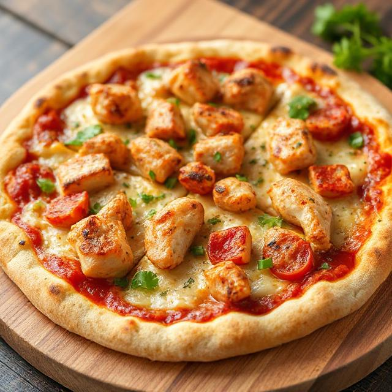
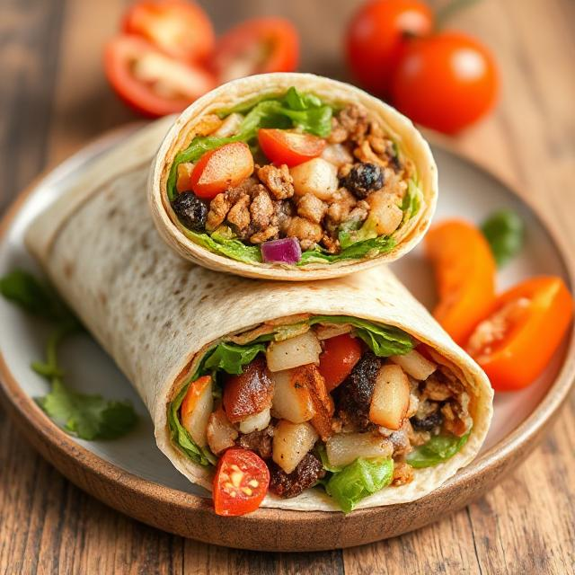
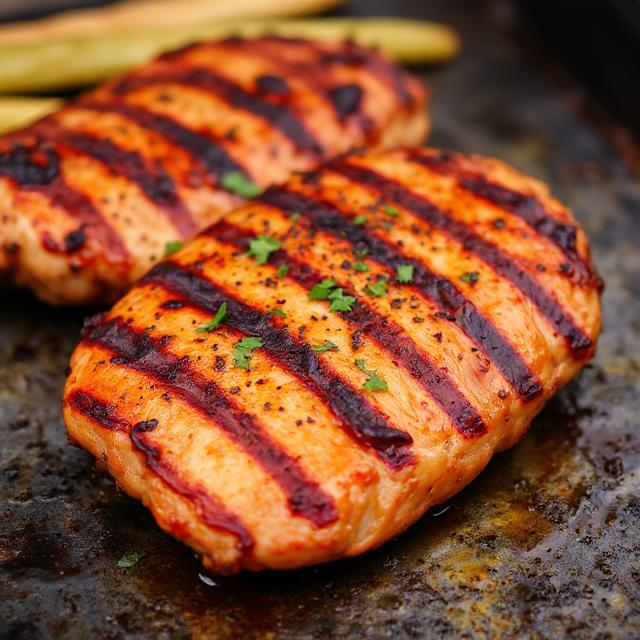

From kitchen to table: Inspiration for food lovers
Find Your Inspiration Here
Top 3 Popular Recipes



Welcome to our cooking website, where flavors from around the world come together! Our talented chefs create unique recipes inspired by different cultures. They mix traditional techniques with fresh ideas to bring you delicious and exciting dishes. Whether you're looking for quick weekday meals, gourmet dinners, or vegan delights, we have recipes for everything! And if you're not in the mood to cook, we’ve got you covered – you can get our delicious meals delivered straight to your door. Inspiration is always just a click (or a bite) away! 🍴✨
When preparing chicken, safety is key! Always use a sharp knife and a clean cutting board to make your cuts precise and safe. Most importantly, avoid cross-contamination by using separate cutting boards for chicken, fish, meat, and vegetables. Harmful bacteria can transfer between foods, so wash your hands, utensils, and surfaces thoroughly after handling raw chicken. Keeping these tips in mind ensures your meals are not only delicious but safe for everyone to enjoy.